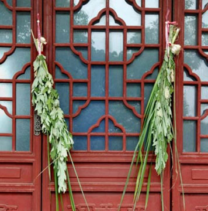

端午食粽是中华民族民间节日端午节的传统习俗。吃粽子源于春秋战国,为纪念楚国大夫屈原。端午节吃粽子,这是中国人民的又一传统习俗。
屈原（前340年－前278年）,战国时期楚国人,芈姓,屈氏,名平,字原,；又在《离骚》中：“名余曰正则兮,字余曰灵均”。
楚国大夫屈原，面临亡国之痛，悲愤地怀抱大石投汩罗江,每到这一天,人们便用竹筒装米，投江祭奠，这就是我国最早的粽子--“筒粽”的由来。

赛龙舟是端午节的一项重要活动，在我国南方很流行，它最早是古越族人祭水神或龙神的一种祭祀活动，也是用来纪念屈原的。其起源可追溯至原始社会末期.
钟馗捉鬼，是端午节习俗。在江淮地区,家家都悬钟馗像,用以镇宅驱邪。唐明皇开元,自骊山讲武回宫,疟疾大发,梦见二鬼,一大一小。

民谚说:"清明插柳，端午插艾。"在端午节,人们把插艾和菖蒲作为重要内容之一。家家都洒扫庭除,以菖蒲、艾条插于门眉,悬于堂中。

端午节小孩佩香囊，传说有避邪驱瘟之意，实际是用于襟头点缀装饰。香囊内有朱砂、雄黄、香药，外包以丝布，清香四溢，再以五色丝线弦扣成索，作各种不同形状。